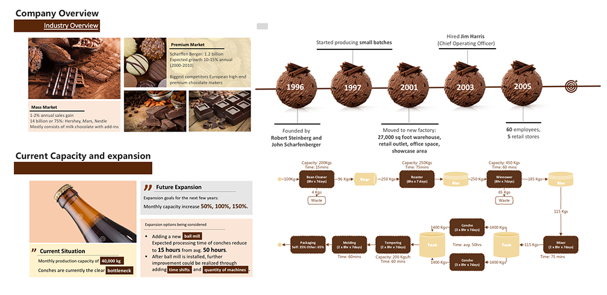
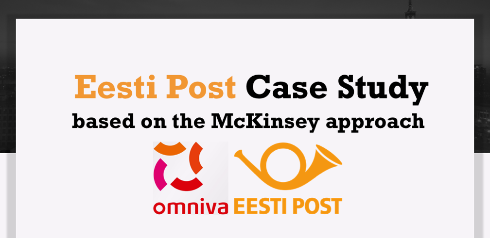
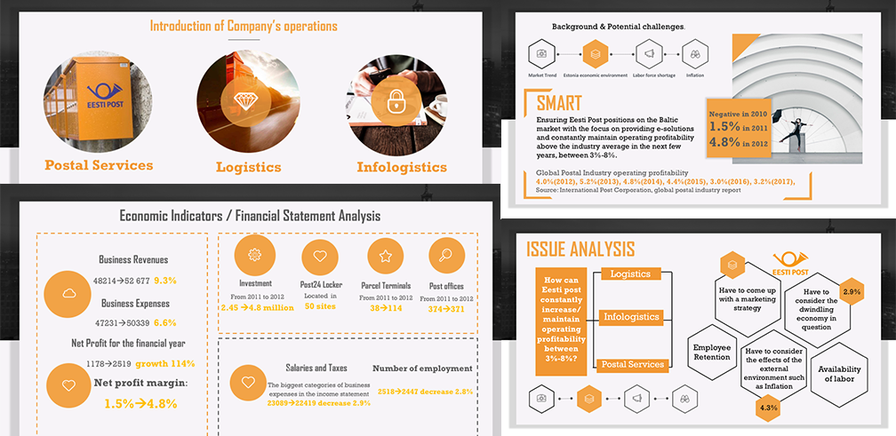
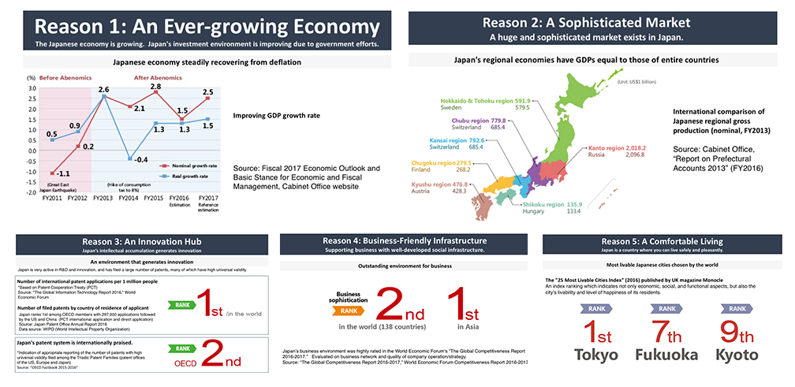
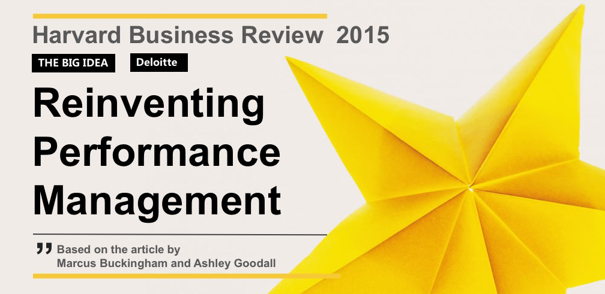
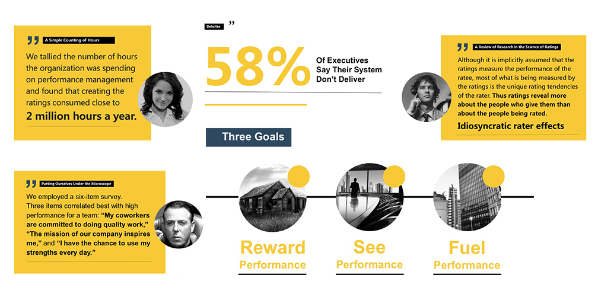
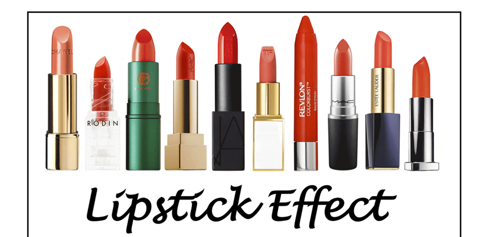

REPORT DESIGNS
Scharffen Berger Chocolate Maker case study
A presentation and analysis of the production processes outlined in the case of Scharffen Berger Chocolate Maker. By presenting company overview, industry overview and business overview, and by focusing on production and capacity analysis, the bottlenect is identified and the possibility of expansion is further discussed.

Eesti post case study
A business analysis on Eesti post yearbook 2012. Based on McKinsey problem solving process, by applying a series of mindset shifts and structured approaches to identifying and thinking about the challenging issues, the report showcase the analytical process of addressing the problems.


Global marketing of Japan
A report introduces some basic knowledge and business culture of Japan, and presents multiple reasons with solid numbers to encourage investments. Some attractinve sectors, promising industries are also recommended for overseas companies that are consideing FDI into Japan.

Reinventing Performance Management article study
A report based on the article by Marcus Buckingham and Ashley Goodall from Harvard Business Review 2015, presenting how Deloitte’s reinvention of performance management system happened, and how they managed to see performance accurately, to reward performance accordingly, and to inspire even better performance.


Lipstick Effect presentation
This is a presentation introducing Lipstick Effect as part of exploring and revisiting some theoretical propostions with real life examples. Based on available research findings, the psychology behind the lipstick effect during economic downturns are discussed, and beneficiary and several similar economic indicators are introduced.


Lcoke v.s. pepsi case study
A case study comparing and evaluating the learning and knowledge management practices between Coke and Pepsi. The presentation is designed and set up from scratch via powerpoint, it's extremelly well-structured and visually appealing with animations.